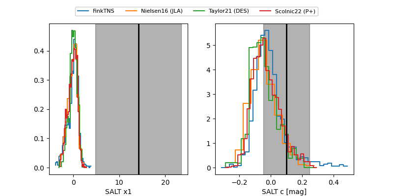

FINK: ZTF25abppels
Lasair: ZTF25abppels
ALeRCE: ZTF25abppels
TNS: 2025xjr
YSE: 2025xjr
ZTF25abppels (ztf,fink)
2025xjr (tns,yse)
ATLAS25lhe (atlas)
equatorial (ra, dec) = (253.5813,+30.04397)
galactic (l, b) = (51.4257,+37.23351)

last ztfg=20.03, ztfr=19.76
2 ztfg, 4 ztfr detections